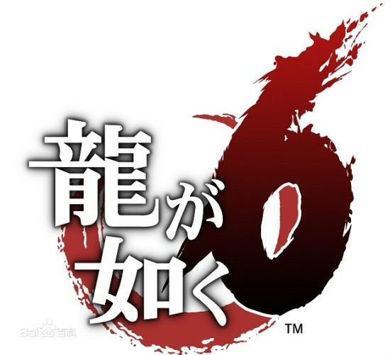
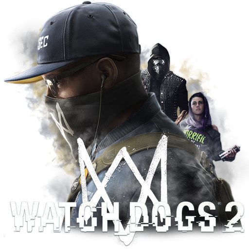

最终幻想15
《最终幻想15》是一款由史克威尔艾尼克斯为PlayStation 4和Xbox One开发发行的动作角色扮演游戏，于2016年11月29日在全球发行。这是最终幻想系列的第15部正传，游戏采用开放环境，战斗方式为王国之心式动作式战斗系统，同时战斗中可以切换武器与驾驶车辆。剧情集中在试图争夺水晶的战争国家的入侵，表现了广阔的世界，和伙伴们一起去看看的旅行。
如龙6 生命诗篇
《如龙6 生命诗篇。》是世嘉于2016年12月8日在PlayStation 4发售的游戏软件。本作为《如龙5 追梦者》的延续，也是系列主人公桐生一马担任主角的系列最后一作。.被称为“堂岛之龙”的传说中的极道，因一些原因被卷入各种事件，2012年卷入全国极道组织的大对抗之后，为认清自身而选择服役的道路，之后2016年出狱的桐生，得知了如家人般的泽村遥失踪的消息，为追寻谜团踏入广岛·尾道仁涯町。

最后的守护者
CEJ公司宣布，由开发PS2名作《古堡谜踪（ICO）》以及《旺达与巨像》的ICO小组的开发的PS3新作《人喰いの大鷲トリコ 》（食人的大鹫）的日版名称为《人喰いの大鷲トリコ》（食人大鹫多里克）。经过本作讲述主人公少年与神奇生物大雕特里克发生的故事。少年一身白衣，手足均布满纹身模样的图案，虽然他非常柔弱，但却以其纯真的心灵与大雕特里克心灵相通成为同伴。大雕特里克拥有狗的身体与面孔、雕的翅膀与利爪，以及巨大无比的身躯，上天入海无所不能

GTA5
《侠盗猎车手5》（Grand Theft Auto V），是由Rockstar Games游戏公司出版发行的一款围绕犯罪为主题的开放式动作冒险游戏。本作于2013年9月17日登陆Play Station 3、Xbox 360平台，2014年11月18日登陆Play Station 4和Xbox ONE平台。多人模式《侠盗猎车手Online》于2013年10月1日正式开放。PC版本已于2015年4月14日推出。 游戏背景洛圣都基于现实地区中的美国洛杉矶和加州南部制作，游戏拥有几乎与现实世界相同的世界观。玩家可扮演三位主角并在任意时刻进行切换，每位主角都有自己独特的人格与故事背景，以及交织的剧情。
看门狗2
《看门狗2》（英语：Watch Dogs 2，风格化WATCH_DOGS2）是一款由育碧蒙特利尔开发， 育碧发行的开放世界动作冒险第三人称射击游戏，为2014年《看门狗》的续作。游戏已于2016年11月15日在PlayStation 4和Xbox One平台发行。Microsoft Windows和Mac OS电脑平台也于11月29日发行。 本作设定于虚构版旧金山，以第三人称视角进行。玩家扮演年轻的黑客马可仕·哈洛威（Marcus Holloway），加入黑客团体DedSec，终止城市先进的监控系统ctOS 2.0。

NBA2K17
本作获得了非常好的评价。 《NBA 2K17》获得了IGN8.9分的评价。IGN指出本作的在线模式没有太大更新，基本上保持了前作《2K16》一样的素质，而网络稳定性也非常不错。此外，虽然在球员规模和数据上游戏无法做出太多的改进，但在运球和上篮等动作系统，以及球队管理的玩法上，本作又带来了新的进步。并且认为《NBA 2K17》的地位是不可撼动的。

FIFA17
《FIFA17》马高·列奥斯担任此部作品的代言人。在PlayStation 4和Xbox One上本作采用了全新的引擎寒霜引擎（Frostbite Engine，即《Battlefield 4》引擎）开发，Frostbite引擎融合了EA的全新的技术，通过全新的渲染，实时物理，动画，智能，运动和网上系统，构成了一个全新的、强力的引擎。EA表示，该引擎能够赋予游戏中运动员“类人的智慧”，玩家会体验到真正的运动员一样的变速和转向的敏捷性。

拳皇14
《拳皇XIV》（日语：ザ・キング・オブ・ファイターズ XIV，英语：The King of Fighters XIV）是SNK开发的拳皇系列格斗游戏，于2016年8月在日本、北美、欧洲、中国大陆发行，对应PlayStation 4平台[2][3][4][5]。这是拳皇系列第四部完全使用3D画面的游戏，前三部为KOF MAXIMUM IMPACT(KOF 极限冲极 )1和2及Type A。而其余前作均为2D画面。
- GTA5
- 看门狗2
- NBA2K17
- FIFA2K17
- 拳皇14
神秘海域4
《神秘海域4：盗贼末路》（英语：Uncharted 4: A Thief's End）是一款在 PlayStation 4 游戏主机上发行的独占动作冒险游戏。游戏由顽皮狗开发、索尼电脑娱乐发行，游戏于2016年5月10日发售。 在《神秘海域3：德雷克的诡计》事件发生后数年，已经退休的宝藏猎人奈森•‧德雷克（Nathan Drake）正一直过着正常人的生活，但是已经和他相隔十五多年的哥哥山姆‧德雷克(Sam Drake)再次在他眼前出现，亦令奈森再次重新踏上宝藏历险旅程。
守望先锋
《守望先锋》把玩家分为两支队伍，每队6人。玩家可从几个预定英雄人物中选择，每个英雄有自己独特属性和技能；这些英雄分为四类：突击型、防御型、重装型和支援型。队员合力保护并捍卫地图上的控制点，或在有限时间内护送载具到达指定地点。玩家获得的诸如人物皮肤和胜利姿势等装扮不会影响游戏。
黑暗之魂3
游戏设定于洛斯里克王国（Kingdom of Lothric），负责延续火之世代（Age of Fire）的初始之火（First Flame）再次衰弱，同时黑暗世代（Age of Dark）中死后复活的不死人（Undead）也再次出现。一众王者和英雄必须再次进行名为“传火”（linking of the fires）的仪式，以自身灵魂重燃初始之火，才能把火之世代延续下去。在这世代中身负传火责任的乃王国的王子洛斯里克（Prince Lothric），但他未有执行职责。
战地1
玩家在游戏中可以使用许多一战时期的武器，例如手动枪机步枪、半自动与全自动步枪、反坦克步枪、炸药、火炮、火焰喷射器与芥子毒气等。近战攻击武器将被分为轻重两类，并且新加入了许多新武器，如军刀、壕杖和铁锹等。游戏中也可以使用轻型坦克、重型坦克、装甲车、无畏舰、双翼机、飞艇、装甲列车、战马等载具。多人游戏中的阵营包括协约国的英国、法国(DLC加入)、意大利、美国和同盟国的德国、奥匈帝国和奥斯曼土耳其。在单人战役模式中将可操作许多不同的角色，多人模式中将支持64人对战，并包含中东战线、西方战线与意大利战线中阿尔卑斯山等地区的地图。
- 神秘海域4
- 守望先锋
- 黑暗之魂3
- 战地1
仁王
《仁王》（日语：仁王）是一款尚未推出的历史题材电子游戏，作品为融入角色扮演要素的动作类型。游戏由Team Ninja开发，光荣特库摩预定于2017年，在PlayStation 4独占发行。故事的舞台是群雄割据的战国时代，一个金发碧眼的日本混血儿武将，为了解开自己的身份之谜已然加入到战斗之中。《仁王》最初公布于2004年，而当时计划登陆PlayStation 3平台，但是之后若干年游戏并没有发售而是逐渐杳无音频，直到2015年东京游戏展上重新公布，而平台也更换成PlayStation 4。
重力异想世界2
自ドリネカ前市长引起的新兵器暴走事件中脱离，向着复兴前进的空中都市“黑奇萨威尔”。观测到异常重力波乱象的重力姬凯特与重力使拉文和警官辛德一同前往调查。被空前规模的巨大重力风暴袭击的三人，被其形成的巨大漩涡所吞没。被重力风暴吞没的凯特漂泊到了名为バンガ的村落。同时与重力猫戴斯特离散后，重力操控的能力也无法继续使用。凯特只能每天在村子中干着采矿的繁重工作，直到有一日再次与同样来到这个村子进行采矿工作的辛德相遇。然而，被称为“黑虫”的新品种重力怪突然出现，凯特与辛德陷入了走投无路的危机之中。
最后生还者2
《最后生还者2》是曾获IGN满分作品《最后生还者》的正统续作，游戏依旧由Naughty Dog开发。《最后生还者2》中艾莉将会是玩家操控的对象。本作故事发生在前作的几年后，艾莉已经19岁了。如果说之前的故事讲述了“爱”，那么这部当中的故事将讲述“恨”。起名为《The Last of Us: Part II》寓意这部作品与前作一起构成一个更大的故事。
- 仁王
- 重力异想世界2
- 最后生还者2